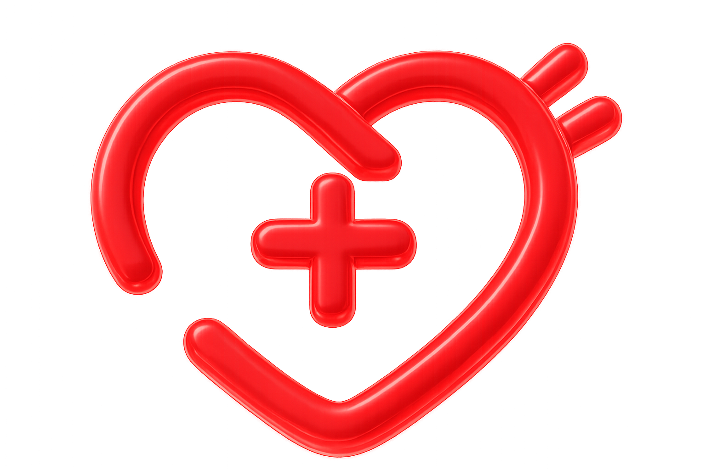
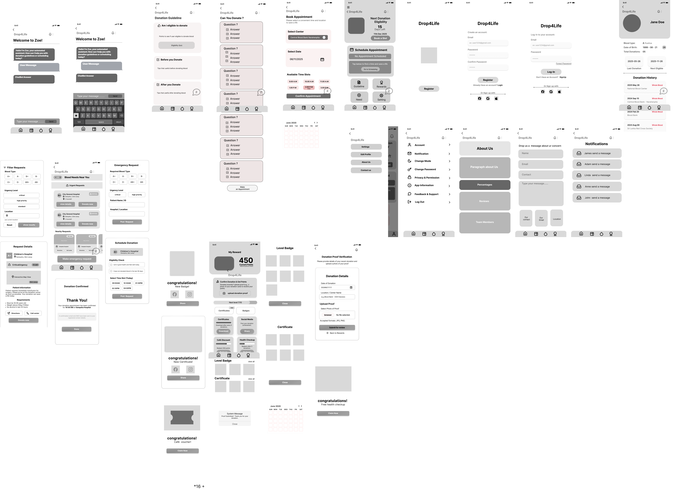
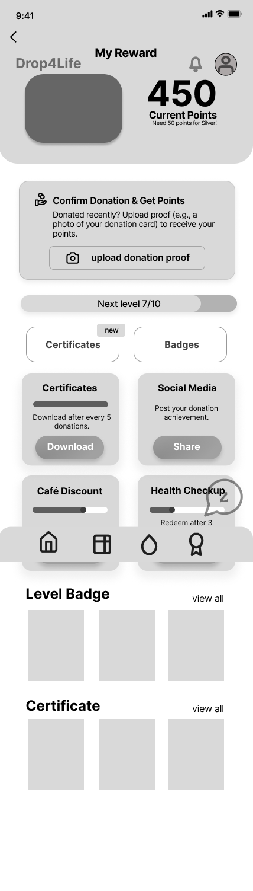
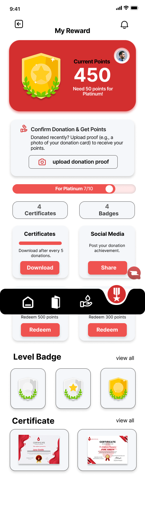
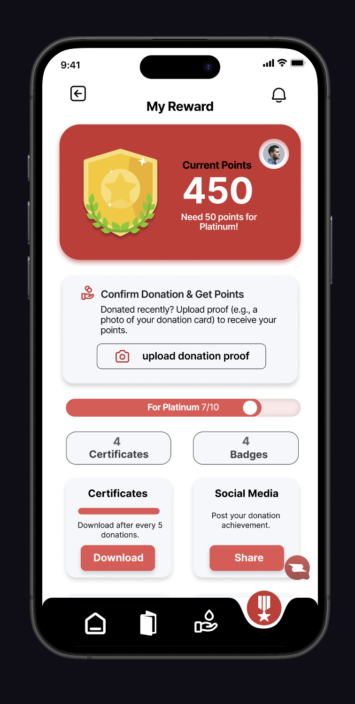
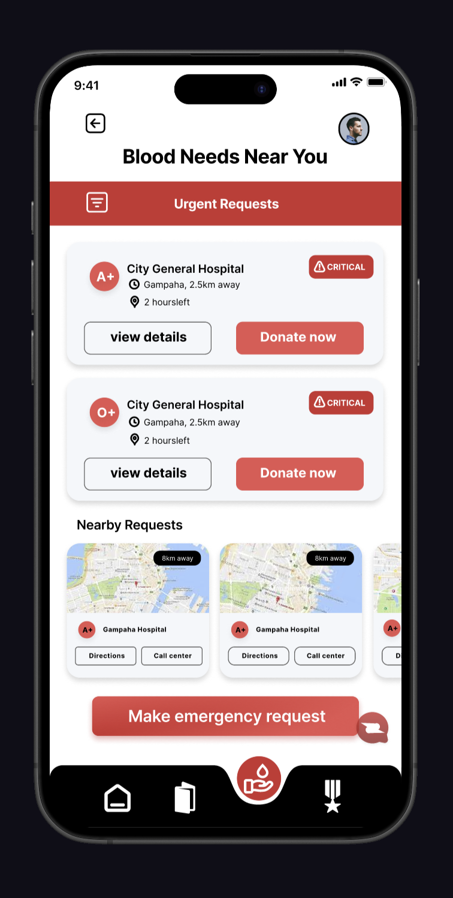
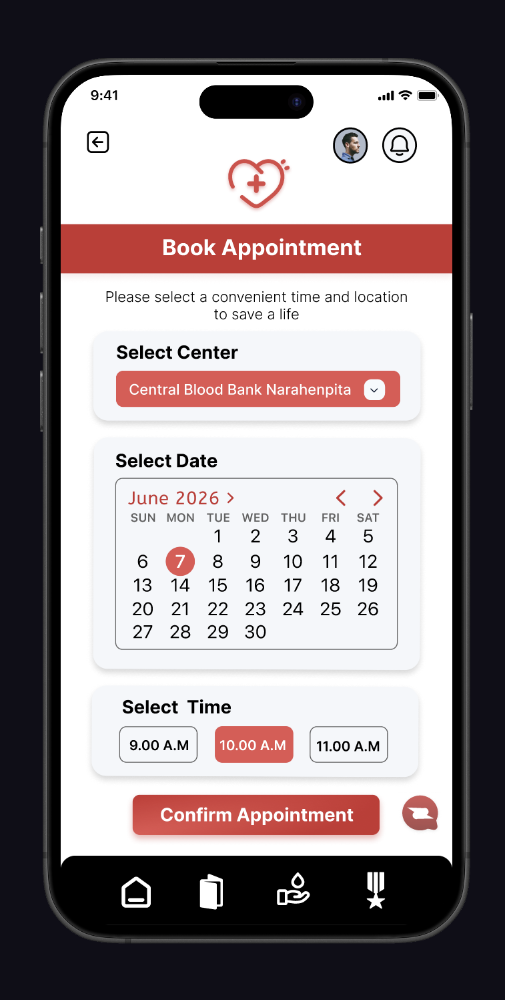
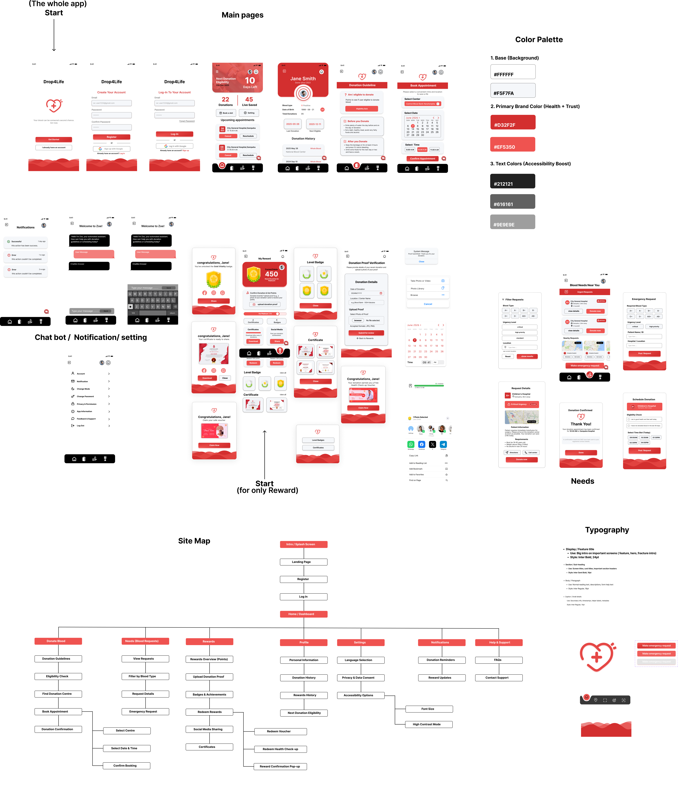

A blood donation mobile app designed to increase donor motivation through a gamified rewards system, appointment booking, and real-time blood need alerts.

Drop4Life is a mobile application designed to address a critical public health challenge: keeping blood donors engaged and motivated to donate regularly. Aligned with the UN Sustainable Development Goal 3 (Good Health and Well-being), the project aimed to move beyond simple utility and build a product that people genuinely want to use.
The project began as a group CW1 (low-fidelity wireframes) and evolved into a fully individual CW2 high-fidelity prototype. I owned the Rewards module and the Needs module entirely, which became the most innovative features in the app.
The core idea: If users are rewarded for donating, they will keep the app open, keep donating, and enjoy the process. Points, badges, health check-up vouchers, and cafe discounts turn a selfless act into a satisfying habit.
Blood banks consistently face a shortage of regular donors. Most people donate once when prompted by an emergency appeal, but there is no mechanism to bring them back. Existing apps are purely transactional: find a center, book a slot, done. There is nothing that makes a person feel acknowledged, rewarded, or connected to the impact they are making.
The challenge I set out to solve was: how do you turn a one-time action into a habit? The answer, backed by behavioral design research, is gamification combined with visible impact.

Early low-fidelity wireframe from CW1, exploring the core layout structure
The visual language needed to feel urgent but approachable. Red communicates health, blood, and action without being alarming. White backgrounds keep the interface clinical and trustworthy. The Inter font family was chosen for its legibility across all sizes, important for users who may be in emergency situations or have visual impairments.
Moving from low-fidelity to high-fidelity, the visual language came to life. The same navigation structure and information architecture from the wireframes was preserved, while color, typography, and component polish were applied on top.


Rewards module: low-fidelity wireframe vs final high-fidelity design
While the app covers the full blood donation journey, the Rewards and Needs modules were my primary design focus and the most innovative parts of the product.



Rewards module: Users earn points for verified donations. Points unlock badges, health check-up vouchers, and cafe discounts. A proof-of-donation upload flow with system confirmation notifications ensures the reward loop feels fair and satisfying.
Needs module: Real-time blood requests from nearby hospitals shown on a card-based feed. Users can see blood type, urgency level, hospital name, and distance. One-tap response connects them to booking. This feature transforms passive donors into active community responders.
The prototype went through task-based usability testing with potential users and received professional critique from Dasuni Nuwanthika, a Senior UX Designer at IdeaHub.lk. Testing focused on the Rewards donation verification flow and overall navigation.
Based on feedback, I made three key iterative refinements:
The final high-fidelity prototype covers all six core modules: Blood Donation, Needs, Rewards, Profile, Settings, and Support. Below are key screens from the completed design.

Final high-fidelity screens showing the complete app experience
The full interactive prototype is live on Figma. Every screen, every flow, fully clickable.